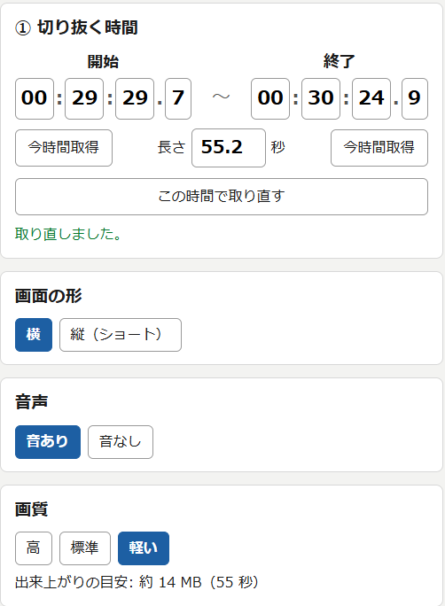
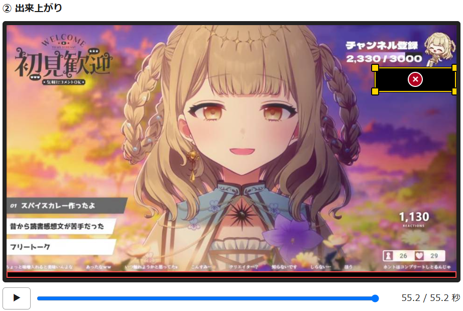
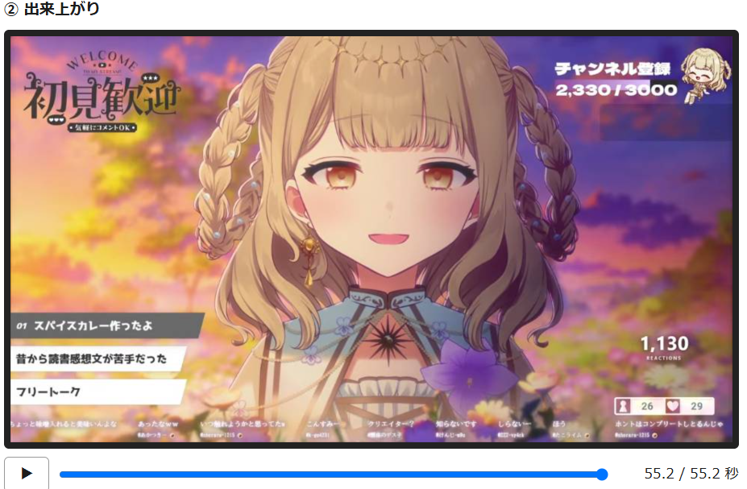

Clip Maker — YouTube 切り抜き
見ている YouTube の場面（最長 60 秒）を、字幕・コメント・隠し四角つきの切り抜き動画に。横もショートも。拡張機能だけで mp4 ができます。
見ている YouTube 動画の「今のこの場面」を、そのまま切り抜き動画（mp4）にする Chrome 拡張です。パソコンに別のソフトを入れずに、拡張機能だけで動画ができます。
下の画像は こちらの配信 を切り抜いたときのものです。
使い方
- YouTube の動画ページで拡張のアイコンを押すと、横にパネルが開きます。切り抜きたい所で「今時間取得」を押して開始と終了を決め、「吸い出して編集画面を開く」を押します。
- 編集画面で、画面（横 / ショート）、音声、画質を選びます。出来上がりの大きさの目安が出るので、送り先の容量に合わせて選べます。
- 隠したい所は、出来上がりの画面の上をドラッグして黒い四角で覆います。コメント欄の名前やスパチャの枠など、いくつでも作れます。
- 字幕とコメントは一覧で直せます。▶ で再生すると、音を聞きながら字幕の時間を合わせられます。コメントは「流し」か「ポップアップ」を選べます。
- 「動画を作る」を押すと、切り抜く時間のぶんだけ再生しながら録画して、ダウンロードフォルダに mp4 が保存されます。設定ファイルも一緒に保存されるので、後から読み込んで直せます。




できること
- 開始・終了・長さを決めて、字幕・コメント・プレビューを取り込む（最長 60 秒）
- 横（1920×1080）とショート（1080×1920）。ショートは元の動画のどこを使うかを枠で囲むだけ
- 字幕は YouTube の字幕か、ブラウザ内の音声認識で作る。文は自由に直せる
- コメント（配信アーカイブのチャット）を流す、またはポップアップで出す。本文も直せる
- 隠したい所を四角で覆う。音あり / なし。画質 高 / 中 / 低
- 出来上がりを確認してから「動画を作る」。設定ファイルを読み込めば後から再編集できる
入れ方
- zip をダウンロードして展開する
- Chrome で
chrome://extensionsを開き、右上の「デベロッパーモード」を ON にする - 「パッケージ化されていない拡張機能を読み込む」で、展開した中の
extensionフォルダを選ぶ
更新するときは、同じ zip をもう一度ダウンロードして展開し、chrome://extensions の更新ボタンを押してください。Chrome の起動時に「デベロッパーモードの拡張機能を無効にしますか」と出ることがあります。「キャンセル」で使い続けられます。
知っておいてほしいこと
- 切り抜く時間のぶんだけ再生しながら録画します（60 秒の切り抜きは約 60 秒）。録画中は YouTube のタブを表示したままにしてください
- 音声認識を選ぶと、初回だけ認識モデル（数百 MB）をダウンロードします。音声はパソコンの中だけで処理し、外には送りません
- 切り抜き動画の公開には、元動画の権利者の許諾が必要です。利用はご自身の責任でお願いします
使い方の詳しい説明と更新履歴は GitHub にあります。